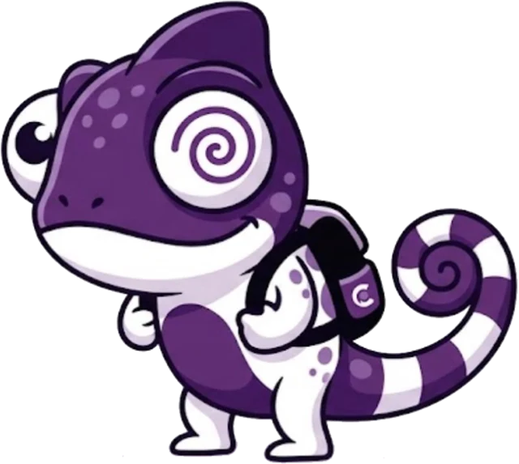

NeuroMotion
Uma plataforma web de apoio ao autoacompanhamento vestibular, unindo tecnologia, informação e conscientização.

01 O problema
Isso se chama cinetose. Ela acontece quando o cérebro recebe informações de movimento que não combinam entre si, principalmente as que vêm dos olhos e do sistema vestibular, o do equilíbrio. Esse conflito pode causar náuseas, tontura e mal-estar.
46%
dos participantes de uma pesquisa internacional relataram algum grau de enjoo em viagens de carro nos cinco anos anteriores.
Schmidt et al. (2020), An International Survey on the Incidence and Modulating Factors of Carsickness. 4.479 participantes.02 Nossa solução
O NeuroMotion reúne recursos para ajudar você a entender e acompanhar questões ligadas à saúde vestibular.
Questionários e instrumentos, como o DHI (Dizziness Handicap Inventory), para você registrar como se sente.
Atividades interativas de treino visual, pensadas para o acompanhamento vestibular.
Seus resultados organizados para você compartilhar com profissionais de saúde.
O NeuroMotion é uma plataforma de apoio e conscientização. Não é um dispositivo médico e não substitui o acompanhamento profissional.
03 Assistente virtual
AXIS
A assistente virtual integrada ao NeuroMotion. Você conversa por texto livre e ela responde sobre a plataforma e sobre a cinetose, dentro do seu escopo, tornando as informações mais acessíveis.
Gostou de conhecer o NeuroMotion?
Venha no nosso stand para saber mais sobre como isso funciona!